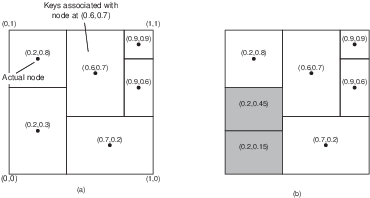

Neste capítulo falaremos sobre os sistemas P2P, do inglês, peer-to-peer, e mostraremos como as DHT, o mais proeminente exemplo de P2P, evoluiram do Chord, essencialmente de uso acadêmico, aos bancos de dados NOSQL, com representantes como Cassandra e o DynamoDB, muito difundidos na indústria.
Arquitetura P2P
Uma forma de ver a arquitetura P2P é como uma substituição dos papéis de clientes e servidores, onde há uma "hirarquia" entre os componentes, por uma onde todos os nós são pares na execução da tarefa em questão, isto é, executam as mesmas funções. Um exemplo comum destas arquitetura são os sistemas de compartilhamento de arquivos, em que cada nó armazena e disponibiliza parte dos dados, bem como acessa os dados disponibilizados por outros nós.
Na prática, muitos sistemas mantém os papéis de clientes e servidores, mas distribuem as tarefas dos servidores entre pares para aquela função; são sistemas híbridos. É assim que funcionam, por exemplo, boa parte os bancos de dados NOSQL, como Cassandra e DynamoDB, que discutiremos mais adiante neste capítulo.
Como principais características destes sistemas P2P, podemos destacar as seguintes: * arquitetura decentralizada; * não há distinção de papéis entre nós ou conjuntos de nós desempenham os mesmos papéis, em parceria; * pode haver entrada e saída de nós do sistema com alta frequência; * nós se organizam em redes sobrepostas (em inglês, overlay), redes lógicas sobre as redes físicas.
Os principais objetivos do uso arquitetura P2P são comuns a todas as arquiteturas distribuídas, isto é: * agregar poder computacional de múltiplos nós e * tolerar falhas de componentes sem paralizar o serviço, isto é, alta-disponibilidade.
Devido à forma como são construídos, sistemas P2P também podem visar * escalabilidade geográfica global, isto é, com nós espalhados por todo o globo e * auto-administração, pois seria praticamente impossível centralizar a administração de tantos nós, com tantas configurações distintas e em tantas localizações diferentes.
TODO: Exemplos de sistemas P2P
Rede Sobreposta
Como já mencionado, em sistemas P2P, os nós ou componentes do sistema se organizam em uma rede sobreposta à rede física. Esta rede lógica é constituída pelos processos atuando como nós e pelos canais de comunicação estabelecidos entre os nós, tipicamente na forma de conexões TCP/IP.
Nestas redes sobrepostas são executados diversos algoritmos, como de descoberta de nós, roteamento de pacotes e de otimização de rotas pelo descarte e criação de conexões. Uma vez que as conexões na rede sobreposta não correspondem a conexões físicas, como se pode ver na seguinte figura, vizinhos em um rede sobreposta não necessariamente correspondem a vizinhos na rede física e vice-versa. Isto também implica que a otimização da rota lógica não necessariamente leva à otimização da rota física.

Dependendo em como esta rede é organizada (ou não), a mesma é classificada como estruturada ou não-estruturada.
Rede Não-Estruturada
Se a rede é construída de forma aleatória, por exemplo deixando os nós se conectarem apenas aos vizinhos na rede no ponto em que se conectaram inicialmente, então esta é denominada uma rede não-estruturada. A figura a seguir é um exemplo que se percebe que nós tem graus diferentes de conectividade e que não estão particularmente organizados em nenhuma topologia.

Suponha que esta rede seja usada para armazenar e consultar dados. Inserções de dados podem ser feitas muito rapidamente, armazenando-os no primeiro nó disponível encontrado. Buscas, contudo, terão que vasculhar a rede usando algoritmos como * busca em largura * busca em profundidade * caminhada aleatória (resposta probabilística)
Rede Estruturada
Se as conexões são construídas e mantidas de forma a gerar uma topologia bem definida, chamamos esta rede de estruturada. Nesta rede, a inserção de nós requer a propagação desta informação para outros nós e a atualização das conexões para manter a estrutura. A estrutura geralmente serve ao propósito de associar os nós aos dados de uma forma planejada. Por exemplo, nós próximos na rede podem ser responsáveis por dados logicamente próximos. Claramente, a inserção e acesso a dados nesta rede é mais custosa, pois independentemente de onde a requisição é feita, isto é, a partir de qual nó, ela deverá ser atendida por um nó específico.
Veja o exemplo do Chord, uma rede P2P em que os nós formam um anel lógico, cujos detalhes veremos adiante. Cada nó é responsável pela faixa de valores indexados por chaves entre o identificador do nó e o do nó anterior. Logo, qualquer inserção ou consulta de dados, deve ser feita especificamente para um determinado nó, e deve ser roteada para o mesmo. A estrutura da rede permite que tal roteamento seja feito eficientemente, no nível da rede sobreposta.

Como outro exemplo considere uma rede em que os nós armazenam informações sobre os dados de uma certa área geográfica, e que nós vizinhos na rede sejam aqueles responsáveis por áreas que se tocam.

Neste exemplo, para se acessar os dados de um certo ponto no mapa, basta rotear a requisição para o vizinho mais próximo do ponto; necessariamente a requisição chegará ao nó correto.
Resumo
| Estruturada | Não-Estruturada |
|---|---|
| Estrutura bem definida | Estrutura aleatória |
| Adição de dados é lenta | Adição de dados é rápida |
| Adição de nós é lenta | Adição de nós é rápida |
| Busca por dados é rápida | Busca por dados lenta |
De não estruturada a estruturada
Em certos cenários, é possível conseguir o melhor de dois mundos. Por exemplo, seja uma grade $N \times N$ em que nós se conectam aleatoriamente uns aos outros, e que nós em uma borda da matriz conseguem se conectar aos nós da borda oposta, com distância 1. Efetivamente, temos a rede sobreposta à esquerda.

Se cada nó executar executar o seguinte protocolo, a rede evoluirá da topologia não estruturada para a estruturada à direita.
* Divida a organização da topologia em dois módulos, um de descoberta de novos nós e outro de seleção.

- O módulo de descoberta, repetidamente, pergunta aos seus vizinhos quem são os seus vizinhos e se conecta aos mesmos.
- O módulo de seleção computa a distância entre o nó e todos os seus vizinhos, e descarta as conexões com maior distância, onde
- a = (x,y)$, $b = (x', y')$
- $dx_{a,b} = min(|x - x'|, N - |x - x'|)$
- $dy_{a,b} = min(|y - y'|, N - |y - y'|)$
Ao final de múltiplas interações, cada nó conhecerá seus vizinhos à direita, esquerda, acima e abaixo. Outra visuzalização desta topologia é apresentada a seguir:

Se em vez da distância cartesiana fosse usada a distância de Hamming entre os identificadores dos nós, ao final das iterações, a topologia alcançada seria um hyper-cubo, no qual diversos esquemas de roteamento eficientes podem ser usados.